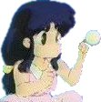

Ricerca sul Sito
|
Ricerca sul Sito |
In questa pagina, potete effettuare delle ricerche. Ma non delle ricerche qualsiasi, bensì delle ricerche all'interno del sito stesso. In questo modo è possibile, ad esempio, sapere tutte le pagine in cui compare Akane o in cui viene nominata una determinata tecnica di arti marziali! Bello, eh!?! ^__^;
In questo modo, è possibile effettuare delle vere e proprie "ricerche enciclopediche" su Ranma.
|  |
| Grafica, impaginazione e testi sono (c) di Francesco "Nibunnoichi" Giordano e non possono essere usati senza il consenso dell'autore. |